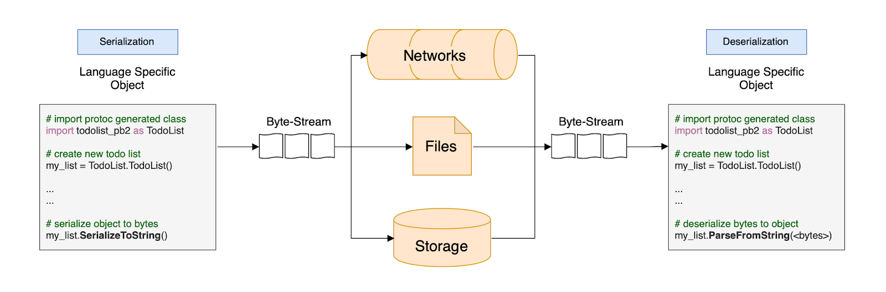
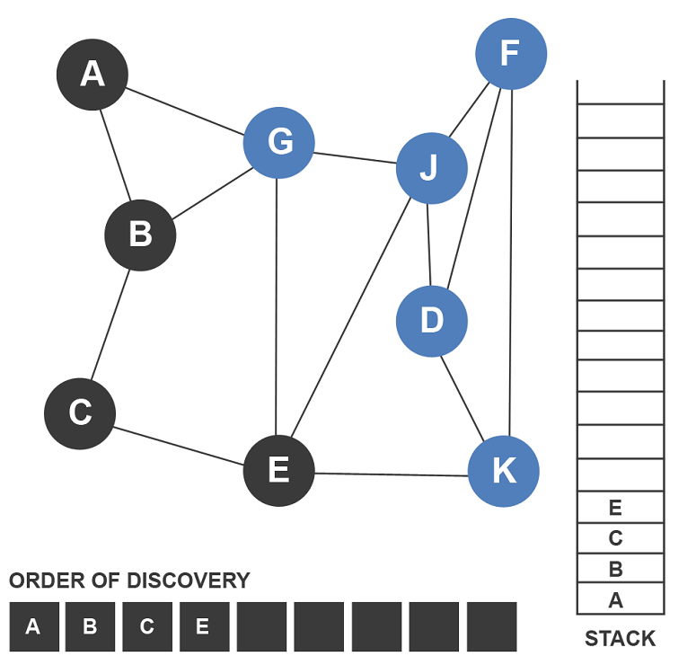

My Internship Experience @ Electronic Arts
During my time as a software engineer intern @ Electronic Arts, I worked on projects I thought were extremely interesting. Along with the projects listed below, I worked on some smaller tickets which helped me
become familiar with different aspects of the codebase.
My Projects
- Project 1: Log Generation & Optimization with Protocol Buffering & Compression
- Project 2: Test Optimization through caching, time simulation, & code traversal
- Project 3: Exception Grabbing using Python, Google Cloud, Kibana & Elastic Search
- Project 4: Building Internal Tooling for server migration
Project 1: Log Generation & Optimization with Protocol Buffering & Compression
 The goal of my research was to see if there were alternative data transfer formats which were faster than the current form we were using, XML. This then led me to Protocol buffering, a format which serialized data in binary rather than via text form.
Over the first half of the internship I researched, proved the potential speed boost, and then was given permission to re-create the logging system to use this format instead, along with various compression formats like Zstd, Lz4, and Gzip.
An issue I ran into while developing it was that the logs were being streamed to a file in realtime, so there was no way to differentiate where one log ended and the other began. To fix this, I utilized variable length delimiting, putting into the binary stream the number of bytes each entry log was, and then writing a python program to parse it, and cut it at a given point in the stream. With this stream of bytes I could then de-parse it into CSV files and clean documents through my Python programs.
I then modified the code parsing this binary stream to also parse it via various compression methods, in order to compare them against each other.
I tested the storage usage using Jenkins preflights, and the CPU & Memory usage with Java Flight Recorder, checking the amount of samples taken within a certain method occuring in the callstack, and comparing it with each other.
In order to test the validity of the logs I created a series of python programs which would compare them together. I then wrote a research paper on my findings, and presented it via a 30 minute tech meeting to the engineering team! The results worked well on a local server, and steps were made to implement this on the live Google Cloud Platform servers, a process which went beyond the length of my internship.
Technologies: Java, Protocol Buffering, Python
Project 2: Test Optimization through caching, time simulation, & code traversal
I created a Kotlin program which used depth first search to traverse through references of methods in the code and score it based on the amount of references, the nature of the reference, and whether those refernces had references themselves. This helped Development Directors and others to determine which parts of the codebase could be removed, and allowed me and other engineers to prioritize as I was tasked with deletion.
I was also tasked with optimizing and removing redundant areas of the codebase, which required a very strong understanding of the codebase and cooperation between multiple cross-functional teams. I removed thousands of lines of code, collaborated with Producers, the Client-side team, the Tools team, and the QV team in order to ensure that none of the changes would affect live.
I also refactored tests to use bulk API requests as opposed to multiple smaller ones, and investigated other ways to optimize the tests that still needed to be there.
While doing this removal, I also suggested and created prototypes for improving the codebase (creating custom annotations, porting to JUnit 5 instead of 4, introducing a simulated clock object instead of relying on Java's default implementation of time, etc.)
These changes ended up reducing pre-flight time by 25 minutes. Assuming 15 pre-flights a day for 22 working days a month, and 12 months a year, this amounts to over 1500 engineering hours saved waiting on building the preflight.
Technologies: Java, Kotlin, SQL, JUnit, Mockito, Spring
Project 3: Exception Grabbing using Python, Kibana & Elastic Search
 I set up and developed Python scripts which captured Java exceptions for different Google Cloud Platform servers, parsed using Kibana & Elastic Search.
I set up and developed Python scripts which captured Java exceptions for different Google Cloud Platform servers, parsed using Kibana & Elastic Search. Technologies: Python, Linux, Bash, Kibana, Elastic Search, Google Cloud Platform
Project 4: Building Internal Tooling for Game Year migration
I created new features within internal tools which allowed for easier migration of year to year migration of game data.Overall Highlights
- I was able to work on projects had variety and impact. Projects I worked on ranged from modifying the Spring-like internal framework, to creating developing/modifying microservices, to creating internal tooling! While I was working on various projects and tickets, ROI (return on investment) was a factor that was consistently stressed, which felt very refreshing.
- I participated in weekly design meetings with senior engineers which allowed me to gain insight in various tradeoffs regarding system design, microservices architecture, solid coding practices, and creating stable software that's able to handle millions of requests a second. Towards the end, I was given the opportunity to lead two of these meetings.
Tools of the Trade
My work was primarily creating/modifying services developed in Java with internal frameworks similar to Spring, as well as Maven, Junit, and Nexus. I also utilized Jenkins as a build pipeline, JAAS for management software, JFR (Java Flight Recorder) for CPU Profiling, Confluence for documentation writing, Perforce for a VCS System, Smartbear Collaborator for code reviewing, Google Cloud for cloud computing, and Elastic Search & Kibana for exception handling. I used Fiddler as debugging proxy, as well as Postman for API debugging.
I used IntelliJ as my IDE of choice, though this was a hot topic amongst the team I was working in.